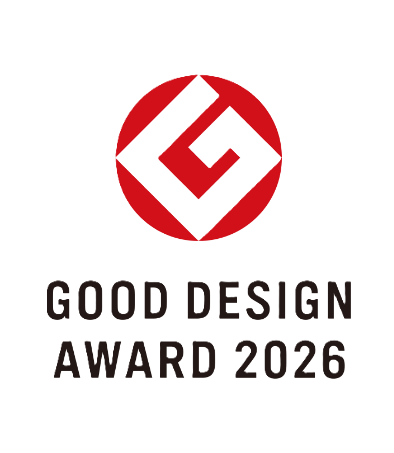
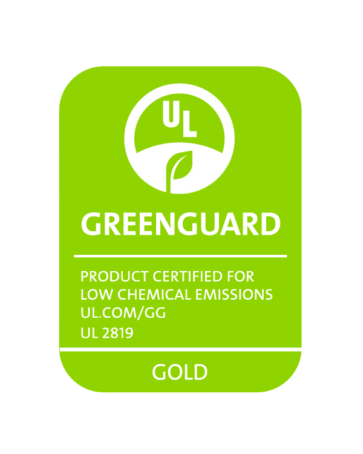
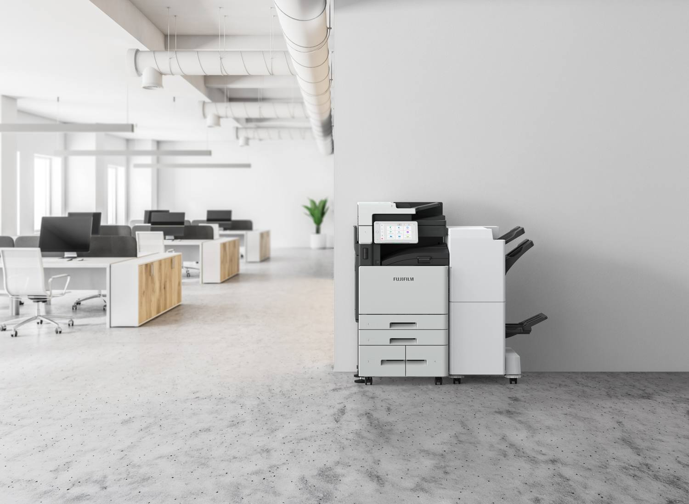
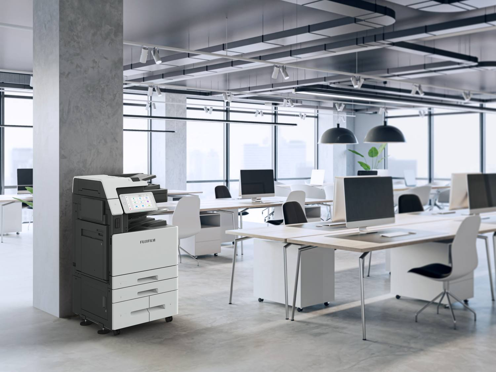

Cloud + AI workflow
Capture once. Use the information everywhere.
Digitise documents, organise captured information and route it into connected cloud workflows so teams spend less time on manual handling.
Where business transformation begins
Capture, organise and connect information to smarter workflows, helping your business work faster and transform digitally.

Features
Scan, recognise, extract, organise and connect information to cloud workflows through one workplace-ready system.
Cloud + AI workflow
Digitise documents, organise captured information and route it into connected cloud workflows so teams spend less time on manual handling.
Intelligent capture
High-speed two-sided scanning, multi-feed detection and intelligent document handling help teams capture large volumes accurately and with fewer interruptions.
Connected with control
Security controls support accountable access and help organisations protect critical information as documents move between the device, teams and cloud services.
Designed around real work
Start with the problem, then see how Apeos can improve the flow of information through your workplace.
Standardise capture, naming and organisation so information is easier to retrieve and reuse.
Support authenticated print release and more controlled handling across shared workplace devices.
Connect document capture with cloud workflows so information can move more easily between teams and locations.
Explore the printer
Drag to rotate. Select a glowing hotspot to see key features.
What's new
New hardware and intelligent operation give existing Apeos customers tangible reasons to look again.
 Apeos C7072 Series
Apeos C7072 SeriesA refreshed interface designed to make frequently used functions and applications easier to access.
A more convenient device experience designed around how people approach and use the multifunction printer.
A 598 × 685 mm footprint designed to fit more naturally into modern shared workplaces.
Scan up to 150 ppm, or up to 300 ppm with one-pass two-sided scanning.
Handle paper weights from 52 to 300 gsm.
AI-assisted operation supports document workflows, device reliability and smarter energy use.
Why upgrade
See how Apeos C7072 moves familiar multifunction printer routines toward smarter, connected workflows.
Support more consistent digital workflows and easier reuse.
Identify potential issues earlier with intelligent monitoring and diagnostics.
Optimise power-saving behaviour around device usage.
Link document capture with cloud, workflow and business processes.
Connected ecosystem
Apeos C7072 connects document capture with cloud services, business applications and workflows so information can move more smoothly through the organisation.
CAPTURE
Apeos C7072 digitises workplace documents so information can move into connected business workflows.
Cloud + AI in action
See how captured documents can become organised information for connected business workflows.
Sustainable efficiency
Resource-conscious design combines intelligent energy management, efficient maintenance and greater use of recycled materials.
Usage-aware power management helps optimise power-saving behaviour.
AI-assisted monitoring and remote diagnostics can help identify potential issues earlier.
Recycled materials and lifecycle-focused design help reduce environmental impact.
Recognition & Certifications
Design recognition and third-party environmental certifications add independent credibility to the new Apeos C7072 Series.

Recognition for thoughtful product design created around the way modern workplaces work.

Third-party certification focused on indoor air quality and limiting product impact on indoor environments.
In the office
Open-plan floors and shared corridors. The Apeos C7072 stands on casters and grows with you through optional finishers, a High Capacity Feeder B1 and a side tray.


Connected support
Connected service, proactive device monitoring and built-in support tools help teams keep everyday work moving.
Internet-connected service can support meter-count verification, device-status monitoring and fault notifications. Services vary by region.
Automatic consumable delivery can reduce the need to manually track routine supply requirements. Services vary by region.
Use Self Help on the control panel, scan the support QR code on a phone, or use Remote Assistance where available.
Specifications
The specifications most relevant to everyday workplace performance, with full technical details available below.
| Item | Description |
|---|---|
| Type | Console |
| Print speed | 70 ppm (A4 LEF), 50 ppm (A4), 41 ppm (JIS B4), 35 ppm (A3), colour and B/W*1 |
| Print resolution | 1,200 × 2,400 dpi (Text-Photo / Photo), 600 × 600 dpi (Text / Map) |
| Scan resolution | 600 × 600 dpi |
| First copy time (A4 LEF) | B/W 3.3 sec., colour 4.1 sec. |
| Warm-up time | 20 seconds or less (23 °C) |
| Recovery from sleep | 10.1 seconds or less (23 °C) |
| Memory / CPU / storage | 6 GB (4 GB system + 2 GB page) · Cortex-A57 2.0 GHz quad core · 256 GB storage |
| Original size | Up to A3, 11 × 17" (297 × 432 mm) |
| Paper sizes | Tray 1 up to A3 · Tray 2 up to SRA3 (320 × 450 mm) · Trays 3 and 4 up to A4 LEF / Letter LEF · Bypass up to SRA3 / 12 × 19" |
| Paper weight | 52 to 300 gsm (trays and bypass tray) |
| Paper capacity | 520 + 520 + 840 + 1,230 sheets + 100-sheet bypass tray (3,210 sheets*3). Optional High Capacity Feeder B1: 2,000 sheets, for up to 5,210 sheets |
| Output capacity | Upper centre tray 250 sheets, lower centre tray 250 sheets (A4 LEF); side tray 100 sheets |
| Document feeder | Duplex Automatic Document Feeder C3-PC, 300 sheets; scan up to 150 ppm (300 ppm two-sided, one pass) |
| Interface | Ethernet 1000BASE-T / 100BASE-TX / 10BASE-T; optional wireless LAN (IEEE 802.11a/b/g/n/ac) and USB 3.0 |
| Page description languages | PCL5 / PCL6; Adobe PostScript 3 optional |
| Power | AC 220–240 V ±10%, 8 A, 50/60 Hz; max 2.2 kW (220 V) / 2.4 kW (240 V); sleep 0.3 W, ready 48 W; TEC 0.64 (AC230 V) |
| Dimensions | W 598 × D 685 × H 1,153 mm |
| Weight | 135 kg (excluding toner cartridge) |
Source: Apeos C7072 / C6572 / C4572 / C3572 / C3072 Functions & Specifications brochure (October 2026). Speeds may be reduced by image quality adjustment. Specifications may change without notice.
Your workplace, your demo
Choose the workflows and challenges you want to explore. We'll use your priorities to shape a more relevant product demonstration.
Tell us a little about your office and we’ll be in touch.
Live chat is not connected yet. You can request a demo instead.